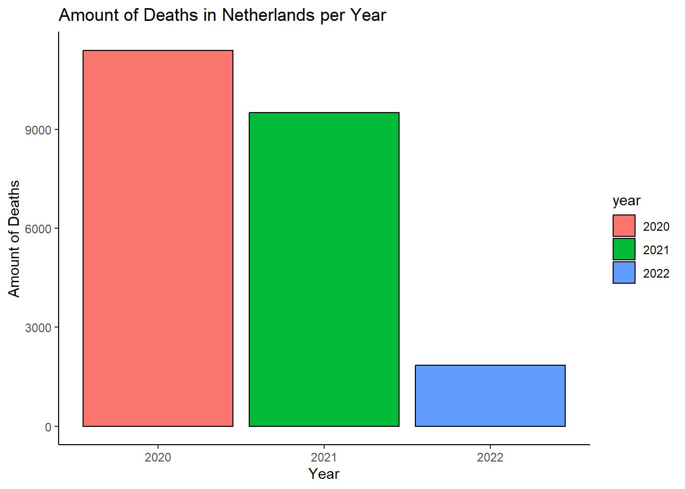
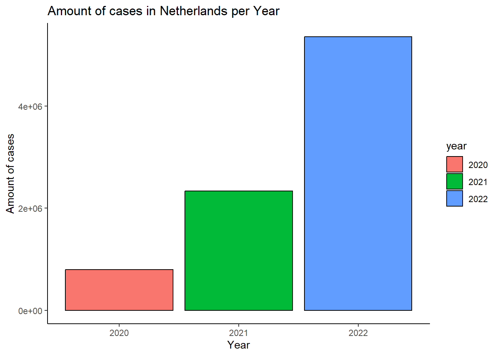

11 covid 19 data parameters
In deze opdracht wordt er gewerkt met parameters. De parameters die gebruikt zijn in deze opdracht zijn contries (land in Europa), year (2020, 2021 of 2022) en months (reeks van periode maanden) De parameters zijn te vinden in de index van de bookdown en kunnen hier ook aangepast worden. Er worden grafieken gemaakt met de parameters om te laten zien dat er met parameters gewerkt kan worden.
Op dit moment gebruikte parameters zijn:
params:
countries: “Netherlands”
year: 2022
months: [1, 2, 3]
De gebruikte data is COVID-19 data Link naar data
Als eerste stap word de data ingelezen.
#Inladen van de data
covid19_data <- read.csv(here::here("data-raw", "Data040", "data.csv"))
colnames(covid19_data)[7] <- "countries"
#Dataframe veranderen naar een tibble
covid19_data_tbl <- as_tibble(covid19_data)
covid19_data_tbl$year <- as.factor(covid19_data_tbl$year)Grafieken met parameter countries
#Samenvatting van het aantal doden per land per jaar
deaths_per_year <- covid19_data_tbl %>%
filter(countries == params$countries) %>%
group_by(year) %>%
summarize(total_deaths = sum(deaths, na.rm = TRUE))
#Grafiek van het aantal doden per land per jaar
plot_deaths_per_year <- deaths_per_year %>%
ggplot(aes(x = year, y = total_deaths, fill = year)) +
geom_col(color = "black") +
labs(title = paste("Amount of Deaths in", params$countries, "per Year"),
x = "Year",
y = "Amount of Deaths") +
theme_classic()
plot_deaths_per_year
#Samenvatting van het aantal gevallen per land per jaar
cases_per_year <- cases_per_year <- covid19_data_tbl %>%
filter(countries == params$countries) %>%
group_by(year) %>%
summarize(total_cases = sum(cases, na.rm = TRUE))
#Grafiek van het aantal gevallen per land per jaar
plot_cases_per_year <- cases_per_year %>%
ggplot(aes(x = year, y = total_cases, fill = year)) +
geom_col(color = "black") +
labs(title = paste("Amount of cases in", params$countries, "per Year"),
x = "Year",
y = "Amount of cases") +
theme_classic()
plot_cases_per_year 
Grafieken met parameter year
#Samenvatting aantal doden per jaar per land
deaths_by_country <- covid19_data_tbl %>%
group_by(year = params$year, countries) %>%
summarize(total_deaths_country = sum(deaths, na.rm = TRUE))
#Samenvatting aantal gevallen per jaar per land
cases_by_country <- covid19_data_tbl %>%
group_by(year = params$year, countries) %>%
summarize(total_cases_country = sum(cases, na.rm = TRUE))
#Grafiek aantal doden per jaar per land
ggplot(deaths_by_country, aes(x = countries, y = total_deaths_country, fill = countries)) +
geom_bar(stat = "identity", color = "black") +
labs(title = paste("Deaths by Country in", params$year),
x = "Country", y = "Total Deaths") +
theme(axis.text.x = element_text(angle = 45, hjust = 1))#Grafiek aantal gevallen per jaar per land
ggplot(cases_by_country, aes(x = countries, y = total_cases_country, fill = countries)) +
geom_bar(stat = "identity", color = "black") +
labs(title = paste("cases by Country in", params$year),
x = "Country", y = "Total cases") +
theme(axis.text.x = element_text(angle = 45, hjust = 1))Grafieken met parameter month
#Filteren voor begin en eind maand
filtered_data <- covid19_data_tbl %>%
filter(countries == params$countries,
year == params$year,
month >= params$start_month,
month <= params$end_month)
#Grafiek aantal gevallen
ggplot(filtered_data, aes(x = month, y = cases, fill = month)) +
geom_col() +
labs(title = paste("COVID-19 Cases in", params$countries, "in", params$year),
x = "Month", y = "Amounth of cases")